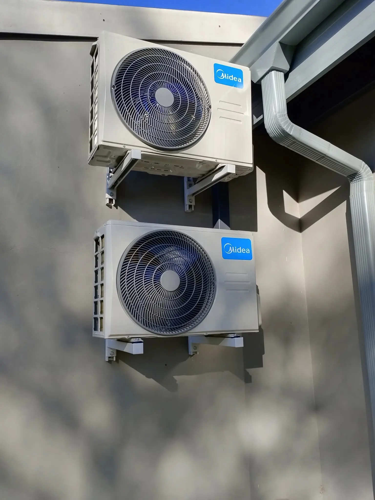

When your aircon stops cooling, starts leaking water or begins making unusual noises, getting the problem checked can help prevent further damage. MyFixer provides mobile aircon repair and servicing for homes and businesses in Centurion, Pretoria and Johannesburg, as well as selected surrounding areas in Gauteng.
Our technicians diagnose common aircon faults including cooling problems, poor airflow, water leaks, electrical faults, fan issues, compressor problems, drainage faults and refrigerant-related problems. We work on wall-mounted split systems, ducted aircon units and inverter models, with on-site diagnostics and repairs provided where practical.
We service popular brands including Samsung, LG, Daikin, Midea, Defy, Kelvinator, Fujitsu and Panasonic, as well as other makes and models depending on the machine, fault and availability of suitable replacement parts.
We diagnose aircon units that are not producing sufficient cooling by checking airflow, filters, coils, refrigerant-related problems and other cooling system faults.
We check indoor fan motors, blower components, filters and airflow pathways when an aircon is not distributing air properly.
We assess refrigerant-related faults, inspect for possible leaks and check system operation before recommending appropriate refrigerant service.
We diagnose power and electrical faults involving wiring, capacitors, controls and other components that can prevent the aircon from operating correctly.
We inspect fan motors, bearings, thermal protection and compressor operation when the system develops mechanical or cooling faults.
We diagnose blocked condensate drains, drainage problems and indoor water leaks caused by faults within the aircon system.
We investigate unusual sounds caused by fan components, loose parts, bearings, mounting issues or compressor-related faults.
We diagnose control faults, PCB problems, unresponsive controls and digital display error codes where applicable.
Aircon problems can involve several systems, including airflow, cooling, electrical controls, drainage, fans, compressors and refrigerant circuits. Our technicians inspect the system to identify the likely cause of the fault before recommending the appropriate repair or servicing.
Aircon servicing and diagnostics can help identify issues such as restricted airflow, blocked filters, water leaks, unusual noises, cooling problems, electrical faults, fan problems, compressor issues and control or error code faults.
MyFixer provides mobile aircon diagnostics, servicing and repair across Gauteng, including Centurion, Pretoria, Johannesburg, Midrand, Sandton, Randburg, Roodepoort and Fourways.
Our technicians travel to homes, offices and businesses where on-site aircon repair is practical. The exact service approach depends on the type of aircon, the fault and the parts or equipment required.
MyFixer diagnoses and repairs aircon units that are not cooling, have poor airflow, leak water, make unusual noises, have refrigerant-related problems, develop electrical faults, have fan or compressor problems, or display control and error code issues.
Yes. MyFixer can diagnose aircon units that are not cooling or are leaking water. Possible causes include restricted airflow, blocked filters or coils, drainage problems, refrigerant-related faults, fan problems, temperature controls and other system components.
MyFixer services popular residential and commercial aircon brands including Samsung, LG, Daikin, Midea, Kelvinator, Defy, Fujitsu and Panasonic, as well as other makes and models depending on the machine, fault and availability of suitable parts.
Yes. MyFixer provides mobile aircon diagnostics and repair in Centurion, Pretoria, Johannesburg and surrounding Gauteng areas including Midrand, Sandton, Randburg, Roodepoort and Fourways. Technicians can attend homes, offices and businesses where on-site repair is practical.
Tell us what is wrong with your aircon and provide the brand and model where available. Our team can help determine the appropriate repair service and next steps.